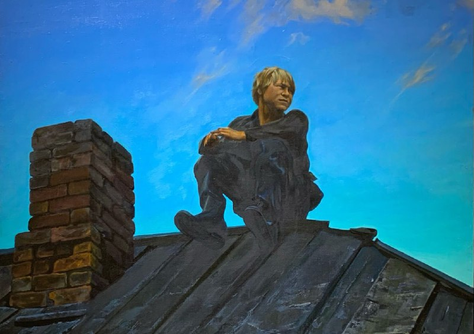

Решил обсудить вопрос трех великих заблуждений, которые с моей точки зрения, очень сильно мешают нам адекватно размышлять о своей культуре и о своей стране. Эти три великих заблуждения раз за разом повторяются за пределами нашей родины. Но, в общем-то, и хрен бы сними. Однако, они и у нас, в нашем информационном пространстве звучат постоянно. Как из уст элиты, как из уст интеллигенции, так и из уст простых людей.
Речь об «отсталости России», «рабской сущности народа» и «замшелом коллективизме» русских. Эти три тезиса частенько так тонко подаются, что вроде бы и возразить нечего, дескать, ну да, что уж тут? А тем временем, на самом деле - это бред, причем бред опасный. Потому что выводы по частным аспектам экстраполируются на культуру в целом, причем экстраполируются на неверных основаниях… и получаются странно-убедительные утверждения, которые в действительности не стоят и выеденного яйца. Это не значит, что нет негативных или противоречивых факторов и всё у нас зашибись - нет. Это значит, что (извините за тавтологию) они просто значат другое.
Давайте, пробежимся по ним в двух словах.
«Отсталость России». Можем ли мы утверждать, что Россия сегодня, в технологическом плане отстает от ведущих экономических держав? Да, можем. Можем ли мы сказать, что такая картина наблюдалась неоднократно в течении нашей истории? Да, можем. Означает ли это, что можно говорить об «отсталости России» вообще, как о некой базовой черте присущей нашей стране (как это вообще-то преподносится)? Нет, не можем. Почему? Потому что в нашем случае, наблюдаемая технологическая отсталость - это проявление того, что Россия как цивилизация живет в своем ритме и по своим принципам, не совпадающим с логикой ядра западной цивилизации. Но под давлением этого ядра Россия постоянно скатывается в «догоняние-перегоняние», вместо того, чтобы заниматься своими делами и разбираться со своими проблемами. Которых у нас, так-то, выше крыши. Но они в другом - это не проблемы отсталости. Дело не в системной отсталости, а в структурной и идейной неопределенности.
Причем, обратите внимание, мне кажется, это очень важно - «давление» западной цивилизации не надо воспринимать как происки «врагов рода человеческого», избавившись от которых мы сразу заживем на кисельных берегах. Это утопическая чушь. Во-первых, запад - такой, какой есть и так же как и у всех остальных, у них свои интересы и свои проблемы, своё дерьмо и свое золото. А во-вторых, «сферического коня в вакууме» не существует и нет больших культур, которые живут вне взаимодействия с другими культурными системами. Так или иначе, влияние и давление есть всегда.
Поэтому, нам надо не давление и «давителей» проклинать, а заниматься саморазвитием. Ключевым фактором которого, является не вырывание волос по поводу собственных косяков и недостатков (что в существующих условиях как раз и превращается в заблуждение об отсталости), а понимание своих уникальных особенностей и преимуществ, на языке которых можно на самом деле написать свое веское слово в великой книге человеческой истории.
Смотрите. Страна, которая построила самое большое государство в мире, существующее в тех или иных формах тысячу лет, которая первая полетела в космос, которая обеспечила массу прорывов в фундаментальных науках, да и много чего еще… и при этом не может сделать нормальный автомобиль и внедрить у себя пасторальные демократические институты. Почему? В общем, это конечно отдельный долгий разговор, но вкратце. Мы всё время пытаемся натянуть ежа на глобус! Катать квадратное и таскать круглое.
Мы забываем про свои сильные стороны и уныло попинываем слабые. Мы пытаемся догнать и перегнать Запад - по их правилам, на их принципах, на их территории, да еще и под их чутким руководством… то есть, в их интересах. Ну, это же бред! Такие начинания всегда будут обречены на провал… за одним исключением - пока большой жареный петух нас не клюнет в мозолистую жопу. А это, так себе стратегия в долгосрочной перспективе.
Отсюда и рождается тезис об отсталости России. Россия - не отсталая, Россия - суперсложная страна с полчищами тараканов, марширующими по просторам нашего национального бессознательного; страна, никак не желающая определиться с тем, кто она есть и что ей надо. Проблема в этом, а не в какой-то мифической национальной отсталости, которая представляет собой не более, чем банальное вранье.
«Рабская сущность русского народа». Второе ключевое заблуждение - это тезис о рабской сущности русского народа.
Еще более бредовое утверждение, нежели первое. Оно базируется на том, что, дескать, русские всегда приходили к авторитарной власти - царь-батюшка, генсек и всё такое - и эта самая власть могла творить с народом чуть ли ни всё, что заблагорассудится. А значит, русский народ - рабский. Так? Так, да не так. Те, кто это утверждают, просто нихрена не понимают в российской специфике и не видят другую сторону медали. Да, действительно, русский народ очень много позволяет власти, очень много. Но при этом, он всегда, на протяжении всей истории выставляет свои условия… вернее два непреложных условия. Попробую их изложить простыми словами.
Первое: ты, «власть» можешь устанавливать любые правила игры и «мы» даже с ними будем соглашаться, вот только безоговорочного права на принятие конкретного решения в каждой конкретной ситуации в отношении себя лично «я» тебе не даю. То есть, каждый раз «я» буду решать «как надо» по месту, по факту, исходя из собственного понимания «правильного» и «справедливого»… а свои законы можешь засунуть себе в одно место. Типа: ни один из представителей нашего народа не будет стоять ночью на пустой улице в ожидании того, пока красный сменится зеленым, просто потому, что так положено. Какая разница, что там, где и кем «положено» - «я» то лучше знаю как надо поступить здесь и сейчас. Иначе говоря, ты «власть», занимайся своими делами, а «я» буду заниматься своими… и самое лучшее, что мы можем друг для друга сделать - это поменьше пересекаться.
И второе: ты, «власть» можешь делать почти, что угодно, но ты обязана выдать победный результат в сложных ситуациях. Вынь, как говорится, да положь. А если ты не обеспечиваешь такой результат - милости прошу «в зад», «кто тут временные - слазь», «шапку долой вместе с…», ну и так далее. Причем, часто, не фигурально, а вполне себе буквально.
Такие социо-культурные установки, как мне кажется, глубоко сидят в нашем коллективном бессознательном, оборачиваясь, периодически разным «непотребством». Не самый лицеприятный механизм и это реальная проблема. Но… какое уж тут рабство? Никаким рабством тут и не пахнет.
«Замшелый коллективизм». И третье великое заблуждение - это тезис о замшелом, устаревшем русском коллективизме, не позволяющем нам радостно бежать по пути индивидуальных достижений, личностных свобод и либерально-демократических успехов. Я вам вот что скажу. Эта байка связана опять же с непониманием особенностей русской, российской ментальности.
Если мы внимательно посмотрим, как строятся это утверждение, то увидим, что по большому счёту, вся проблематика основывается на противостоянии двух идей: индивидуальной гражданской идентичности западно-европейского типа и традиционалистско-консервативной коллективной идентичности восточного типа. Если немного упростить, то рассуждения примерно такие: надо двигаться по пути индивидуальной идентичности, формирования независимой личности-гражданина (с правами человека, демократией, личной свободой и тп); да, дескать, на этом пути есть свои опасности и трудности, но альтернатива гораздо хуже - мракобесие, общинные путы, традиционные ограничения, отсутствие личной свободы и прочие «прелести». Что в такой ситуации думает нормальный, образованный, активный человек? - «Ну да, похоже на правду... может мне и не очень нравятся некоторые западные явления, но что делать то? не хочу обратно в отсутствие свободы самореализации, насильственную общинность, «отсутствие кофеен» и путешествий».
Логично? Вполне. Но. Всё дело в том, что такая бинарная оппозиция в корне ошибочна. Подобное противопоставление индивидуалистической идентичности западного типа и коллективной восточного, на нашей почве, заведомо предполагает, что в русском культурном коде нет собственной индивидуальной идентичности. Но это не так! Просто она другая и формируется по другим принципам.
Смотрите: европейский менталитет наделяет индивидуальным ответственным самосознанием как бы всех своих членов, просто по факту принадлежности (на этом строится вся их культура последних 300-400 лет… помните, когда про толерантность говорили, то там есть такая установка, что все типа одинаковые).
Русский же код, на самом деле, не отказывает людям в индивидуальной идентичности, но указывает, что такое самосознание (а значит и соответствующие права и обязанности) приобретают не все, а только отдельные представители общества, если они вышли на определенный уровень интеллектуального и духовного развития. Остальные же, остаются на уровне коллективной идентичности. Причём, они не превращаются при этом в «плохих», «тупых», «быдло» и тп, а просто обладают иными правами и обязанностями, иным авторитетом и иной степенью влияния на общество в целом. Не на уровне закона, а в общественном сознании.
Обратите внимание, общественным авторитетом (а по факту, правом на индивидуальную идентичность) у нас народ наделяет ученых, деятелей культуры и религии… и почти никогда не наделяет таким авторитетом представителей элиты. Из элиты этим наделяется только один человек - царь. И всё. Остальные - это либо его «помощники», либо «подлые ворюги»… и никакой индивидуальной идентичности. В свою очередь, такое негласное отношение часто порождает у представителей науки и культуры ложное ощущение собственной исключительности. Впрочем, это отдельный вопрос…
Но и это еще не всё. Дело в том, что приведенная мной особенность «общественного признания» - это именно общественная черта. А на персональном уровне (внимание!) русские, вообще, махровые индивидуалисты. Махровые настолько, что пробы ставить негде. Но, суровая среда и перипетии истории приучили к тому, что выжить можно только сообща. Следовательно, принимаемые как необходимые, принципы коллективизма требовалось как-то увязать и с личностными характеристиками, и с интересами социума. Вот так и родилась эта специфическая система избирательного наделения индивидуальной идентичностью.
Так вот. Эта особенность нашей национальной ментальности за последние 30 лет несколько «подразмылась», но она никуда не делась и не учитывать ее никак нельзя. Тем более, что, как мне кажется, в ней скрыты как огромная опасность, так и огромная сила и большой смысл.

